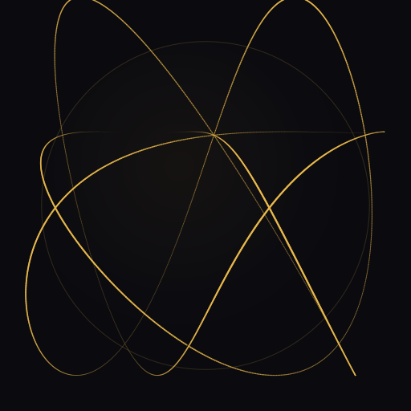
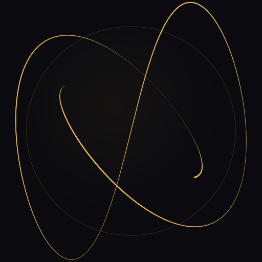
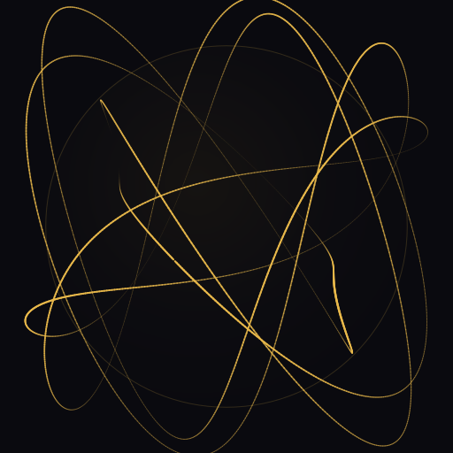

Logo · Lissajous-in-sphere · the channel's signature



Trace of coupled oscillations inside a bounded sphere · re-renders per stream with a new ratio + seed · the patch is itself a pedagogical artifact (see logo-lissajous.live.html).